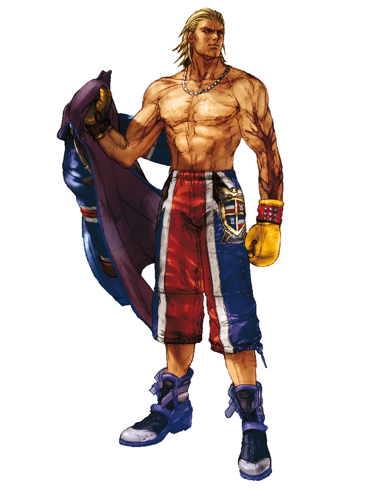

Steve Fox
Steve era um jovem boxeador britânico curtindo sua carreira como campeão mundial dos médios. Adotado ainda na infância, Steve buscou a identidade de seus pais biológicos, bem como a origem da cicatriz em seu braço.
Um dia, Steve foi ordenado por um grupo da máfia a lançar uma luta de alto risco, mas ele recusou e, em vez disso, venceu a luta. Infelizmente, a Máfia cumpriu suas ameaças e colocou a cabeça de Steve a prêmio. Com a máfia em perseguição, Steve fugiu da Inglaterra para os Estados Unidos e levou uma vida em fuga. Mas Steve logo percebeu que não importa o que ele fizesse, a máfia acabaria por pegá-lo e matá-lo. Ele nunca aprenderia a verdade sobre seu passado.
Motivado por essa percepção, Steve buscou os holofotes mais uma vez e entrou no The King of Iron Fist Tournament 4.
Escolha um lutador